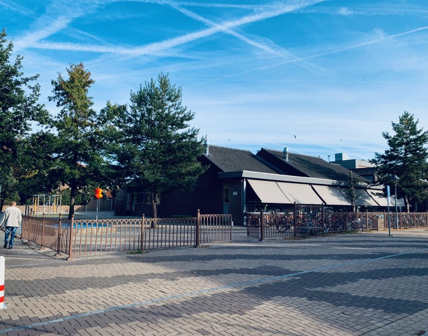

De scholen waar ik heb gezeten:

Basisschool de Wingerd in Bergharen.
Hier heb ik tot mijn 5de gezeten en ben daarna naar Nijmegen gegaan.
Basisschool Martinus van Beek school in Nijmegen.
Van mijn 5de tot 12de heb ik in het speciaal onderwijs gezeten.
Pax Christi College in Beneden - Leeuwen.
Van mijn 13de tot 15de op deze locatie gezeten aangezien ze hier les gaven aan het eerste & tweede leerjaar.
Pax Christi College in Druten.
Van mijn 15de tot aan mijn 17de op deze locatie gezeten, en mijn VMBO Kader diploma behaald.
Koning Willem I College in 's-Hertogenbosch.
Van mijn 17de tot aan mijn 20ste heb ik de studie gevolgd: Medewerker Beheer ICT.
Nu van mijn 21ste tot 23ste studeer ik Software Development.